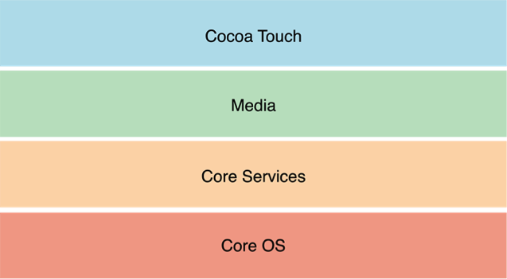
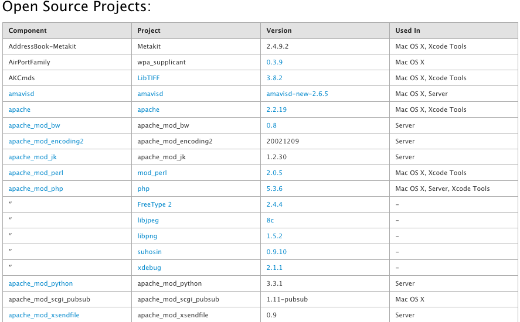

Tech Stack Research: Apple
Programming Languages/Frameworks
iOS is the operating system that Apple uses on all of their devices. This system manages the device hardware and provides the technologies required to implement native applications. The iOS Software Development Kit (SDK) holds the tools and interfaces needed to develop, install, run and test native apps that appear on an apple device home screen.
iOS technologies can be viewed as layers. The lower the layers contain fundamental services and technologies while the higher level ones build upon the lower layers and use more sophisticated technology.
Apple also offers iOS Frameworks. Which is a system that contains a dynamic shared library (i.e. header files, images, helper apps). To use these frameworks, you can simply add them to your application from Xcode. (3 Apple, Inc.)
Open Source Software
Open Source software is the heart of Apple platforms and developer tools. Apple continues to both lead and make significant contributions to an assortment of Open Source projects. Major components of Mac OS X, including the UNIX core, are made available under Apple’s Open Source license. This allows developers and students to view source code, learn from it and submit suggestions and modifications. Apple believes that using Open Source methodology makes Mac OS X a more robust and secure operating system. It’s core components have been subjected to the crucible of peer review meaning any problems that are found with this software can be immediately identified and fixed by Apple and the Open Source community. Below shows a list of some of many that Apple allows you access to freely learn and explore.(4 Apple, Inc.)
Swift is the newest and most powerful open source software that Apple has to offer. It is intuitive and designed to give developers the freedom they need to be able to create the best applications. It is easy to learn and use. What makes swift so awesome is that it is an open source. Any creative being out there can learn how to use this software and create a kick-ass application.
Deploying Code To The Web

Setting up and deploying iPad and iPhone throughout your business has never been easier. With a complete set of tools from Apple and a third-party mobile device management solution, your organization can easily deploy iOS devices and content at scale. Mobile device management (MDM) allows you to configure and manage your devices and wirelessly distribute and manage your content. The Device Enrollment Program (DEP) automates enrollment of Apple devices into your MDM solution to streamline deployment. The Volume Purchase Program (VPP) lets you purchase apps and books in bulk and distribute them to users. (1 Apple, Inc)
There are four deployment steps to get you through this process. First prepare, second you set up your devices, third you deploy them and lastly you then can manage your applications.
Git and Other Source Control Software
Use commands in the Source Control menu to manage your project files with a source code repository. Source control allows you to keep track of file changes at a fine level of detail. Xcode supports two popular source control systems: Git and Subversion. Subversion (svn) is always server based. The server is typically on a remote computer. Git can be used purely as a local repository, or you can install Git server on a remote computer to share a repository among team members. If you are working alone, it would be easiest for you to use Git so you won’t have to set up a server. When you create a project, Xcode automatically sets up a Git repository for you. (2 Apple, Inc.)
Apple's CDN
Apple now has their own CDN in the U.S. and Europe and the company is now delivering some of their own content, directly to consumers. In addition, Apple has interconnect deals in place with multiple ISPs, including Comcast and has paid to get direct access to their networks. Apple released the beta version of their next desktop OS, Yosemite (10.10), and with iOS 8 came out last fall. Apple’s putting in place a lot of capacity to support upcoming software releases. Apple is still using Akamai and Level 3’s CDN services for iTunes (Akamai), Radio (Level 3) and app downloads, but over time, much of that traffic will be brought over to Apple’s CDN. Apple already controls the hardware, the OS (iOS/OS X) as well as the iTunes/App store platforms. Right now they control the entire customer experience, except for the way content is delivered to their devices, and they are quickly working to change that. (Rayburn)
Unique Things about Apple's Tech Stack
Swift was introduced at Apple's Worldwide Developer Conference (WWDC) 2014 as a replacement for Objective C, Apple's long-time programming language. It is built on an Objective C foundation. Meaning that it is easy to understand and you don't have to "un-learn" anything in order to utilize Swift. Swift also has a "playground" that allows programmers to see the result of a code without going through the complete link cycle. The only thing you need is a web If you want to develop applications for the Mac, iPad, iPhone, iPod, or Apple Watch, then Swift (and Xcode) is where you'll be spending most of your time. The good news is that you can learn one syntax and write apps for a wide variety of platforms. The bad news is if you hate using Swift for one platform, you're going to hate using Swift for everything that Apple makes.browser. Swift code is complied and run on a live interactive basis, as you type, results are displayed in a step-by-step timeline as they complete each task. (Franklin)